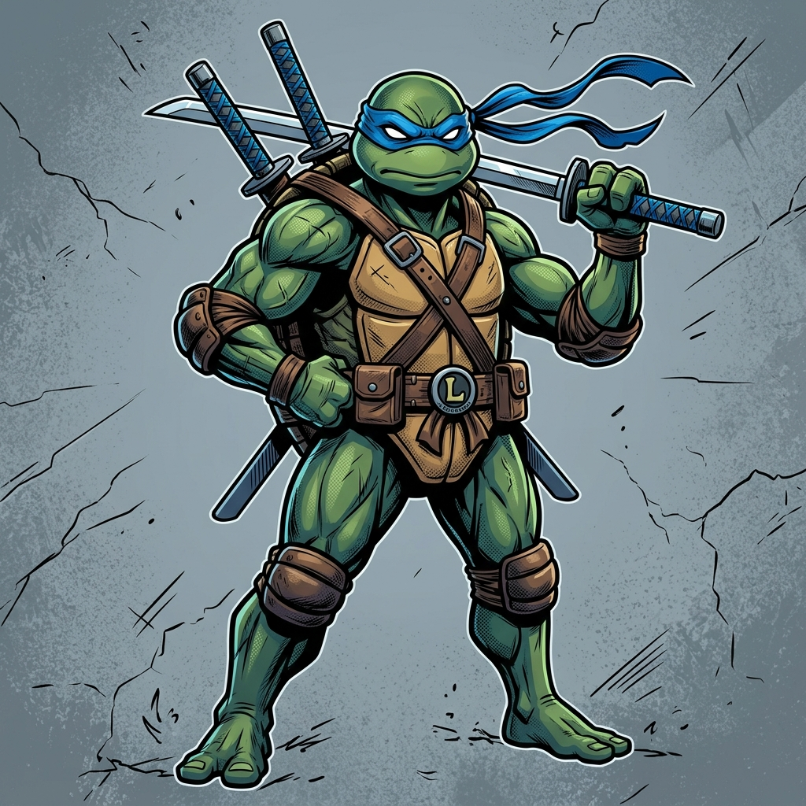

Leonardo
Nivell 1 · Lluitador (Fighter)
Army Forge: Elfs Foscos (Dark Elves) · Campió Aspirant (Aspiring Champion)
| Qualitat (Qua) | Defensa (Def) | Resistència (Tou) | Poder (Pow) |
|---|---|---|---|
| 4+ | 6+ | 9 | 4 |
| Força (Str) | Destresa (Dex) | Voluntat (Wil) |
|---|---|---|
| 4+ | 6+ | 6+ |
Arma: Arma de mà (Hand Weapon) A3 · representada com a katanes.
Ús narratiu: líder equilibrat, manté la línia i coordina objectius.
100 puntsHeroi